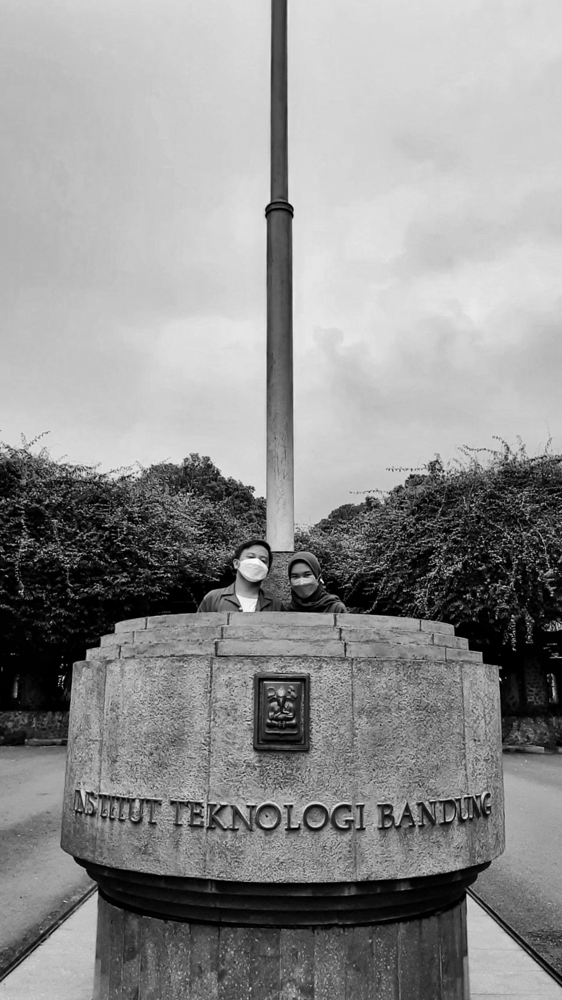
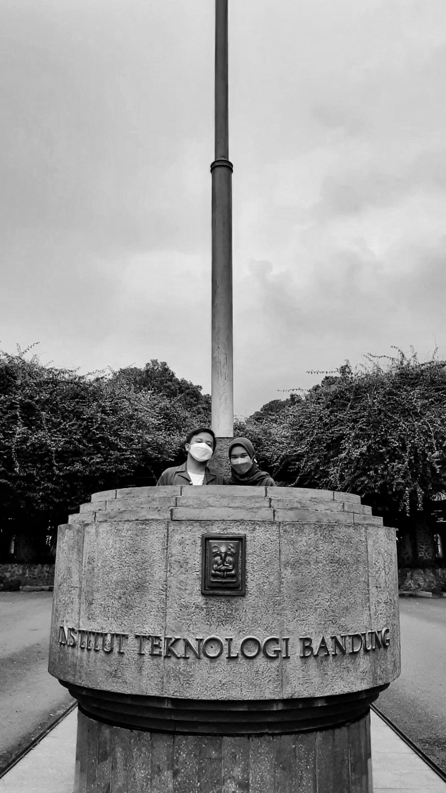
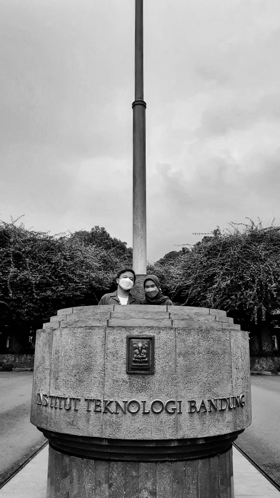
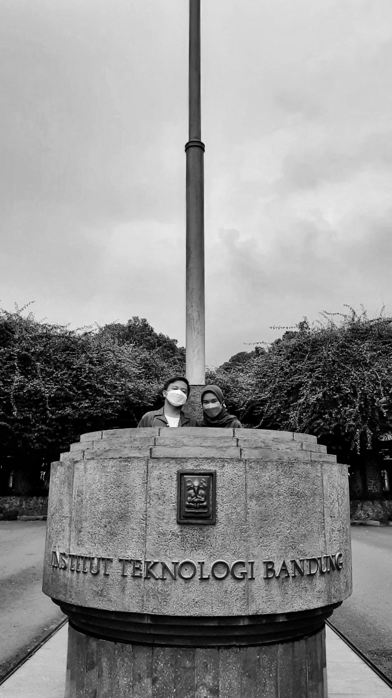

Inget gak, pertama kali kita kenalan itu karena kamu minta bantuan aku buat ngajarin kamu pengkom. Aku belum kenal kamu sama sekali waktu itu.
Haii sultann, salkenn yaa
Aku seneng chat sama kamu, aku nyaman chat sama kamu. Untuk pertama kalinya aku mulai terbuka sama kamu. Waktu ini juga aku pertama kali liat foto profil kamu, kamu cantik.
Eh lo sre juga?
Aku belum pernah zoom berdua bareng orang, untuk pertama kalinya aku zoom bareng kamu. Zoom pertama ini yang kasih impresi awal aku ke kamu, kamu selalu ada usaha untuk bisa, aku rasain ada yang beda dari semangat dia dibandingkan orang lain. Kamu mau minta diajarin aku bahkan sampe larut malam, kamu keren banget!
di zoom dong gue nanyanya bole gaa
Setelah wacana campus tour muncul, aku seneng banget karena aku tau aku bisa ketemu kamu walaupun aku masih takut ketemu kamu waktu itu. Waktu itu aku takut kamu gak ikut campus tour. Aku pengen banget kamu ikut campus tour. Aku bener-bener berharap kamu ada waktu itu, aku pengen ketemu kamu langsung untuk pertama kali. Terus kita bercanda tentang tempat berenang di depan kampus😋, ngeselin banget ya hehe.
OHH DI DALEMNYA
Aku belum pernah deket sama perempuan lain, aku belum pernah ngerasain gimana rasanya dikasih perhatian sama perempuan. Kamu kasih perhatian itu pertama kali buat aku, aku seneng☹
lagi kaya gini jgn sampe lupa makan okaay👍
Selama aku pake line, aku belum pernah rename orang lain. Tapi pas kamu rename aku, aku seneng, walaupun itu hal simpel tapi waktu itu aku bener-bener seneng dan waktu itu juga pertama kali aku rename orang di line.
lama2 gue rename contact lu di line jd "anak baik"
Kamu mau call aku waktu itu tapi aku gak jawab call kamu😔. Aku ngerasa bersalah banget waktu itu, bahkan sampai sekarang aku masih ngerasa bersalah, maafin aku ya sayang☹.
maaaaaf tadi gue ganyadar hp nya matii:(
Kamu pasti bingung kenapa ceritanya berenti disini ya, jujur udah 10 hari aku ngulang chat kita dari awal, ujungnya aku sedih, aku belum sanggup☹. Aku selalu terharu kalau nginget seberharga itu kamu di hidup aku😔🤎.
Hai, cantik!
Sepuluh bulan yang lalu kita bukan siapa-siapa, kita cuma orang asing yang belum kenal satu sama lain. Kamu siapa, kamu darimana, tujuan kamu apa, aku belum tahu waktu itu. Kamu datang dengan salam kenal dan kamu minta bantuan aku waktu itu.
17 Agustus 2021, Aku belum kenal siapapun di lingkungan yang baru ini. Aku takut, aku takut kalau aku beneran gak punya temen. Sebulan penuh aku perlu untuk beradaptasi dengan lingkungan baru ini, aku liat semua orang udah punya teman, aku belum punya sama sekali.
15 September 2021, Aku kenal sama kamu untuk pertama kalinya, perkenalan yang jadi awal cerita bahagia aku😋. Kamu minta bantuan aku. Lagi-lagi aku takut, aku takut kamu kayak orang lain yang hanya datang saat butuh, tapi hilang saat aku cari. Kamu beda, kamu selalu bilang makasih ke aku setiap kali aku jelasin, hal kecil yang buat aku ngerasa dihargain.
Waktu terus berjalan, aku nyaman dengan kamu, kamu terus kasih perhatian yang lebih dari awal kita ketemu. Aku belum pernah dapat ini semua, aku tau itu hal kecil tapi itu berharga banget buat aku.
10 November 2021, kita ketemu untuk pertama kalinya, aku selalu berharap buat ketemu kamu. Aku seneng banget bisa ketemu kamu, walaupun waktunya cuma sebentar tapi memori itu selalu ada di kepala aku, aku selalu berharap aku ketemu kamu lagi setelah itu. Kita foto untuk pertama kalinya berdua didepan orang banyak, kamu pegang tangan aku, untuk pertama kalinya tangan aku dipegang kamu☹. Aku sedih pas kamu pulang, aku takut hari itu adalah hari terakhir kita ketemu. Aku suka sama kamu.
20 Desember 2021, kamu datang ke Bandung, aku seneng banget kamu bisa datang lagi kesini. Kamu bahkan bela-belain untuk ketemu aku malam-malam, padahal aku tau waktu itu kamu pasti cape, karena sehari penuh kamu aktivitas. Malam itu pertama kita pegangan tangan, seneng banget...
21 Desember 2021, hari itu aku gak bisa ketemu kamu, jujur aja waktu itu dalam hati aku, aku pengen banget ketemu kamu. Hari itu jadi hari yang spesial, hari itu aku pilih kamu buat jadi pasangan aku, butuh waktu yang panjang buat aku pilih kamu, pacaran bukan cuma tentang dua orang saling suka, tapi jauh lebih rumit dari itu. Aku gak mau aku buat kamu sakit, aku mau kamu selalu dalam lindungan aku, aku sayang sama kamu😔🤎.
17 Januari 2022, HARI PERTAMA KULIAH SEMESTER 2!, aku bisa ketemu kamu lagi, aku seneng banget. Waktu itu jujur aku masih malu, jauh sama sekarang yang gak punya malu😋. Aku ketemu kamu pertama kalinya di GKU 1, hari itu gak bakal bisa aku lupa karena kamu cantik banget☹.
Sekarang, Sudah 6 bulan kita bareng, banyak hal yang aku lewatin bareng kamu, kita belajar bareng di GKU 2, nungguin orang duduk pergi di kursi kesukaan kita yang ada tempat cas & tempat nyender, bingung milih makan siang yang berujung gagal, makan bareng kamu sambil diganggu kucing, kita jalan bareng sejauh itu cuma buat ke koprasi, kita selalu nunggu lift gak pernah mau naik tangga, kita nonton upin-ipin pas lagi makan, semua hal aku lewatin bareng kamu, seneng, sedih, ketawa, nangis, takut. Kamu selalu hadir di hidup aku dan selalu ada buat aku disaat aku butuh kamu, kamu orang yang aku cari selama ini, aku bukan apa-apa kalau gak ada kamu. Kamu ngajarin aku kalau cinta itu bukan cuma saling suka, tapi cinta itu saling melengkapi kekurangan masing-masing, kamu selalu terima kekurangan aku.
Sayang, makasih buat perhatian kamu yang berharga banget buat aku, setiap hari aku selalu bersyukur bisa punya kamu. Maaf selama ini aku belum bisa jadi cowo yang baik buat kamu, aku selalu ngulang kesalahan ditempat yang sama, tapi kamu selalu sabar. Nanti kita wujudin semua imajinasi kita pas 2030 ya! Kita buat itu semua jadi nyata🤗.
Selamat 6 bulan bareng aku! Aku sayang kamu, sekarang & sampai tua nanti🤎.
Bandung kota maju, 1 Juni 2022
Ruru
Nanti lari kaya gini lagi yu, terus ngerakit lego lagi dilantai 3😋